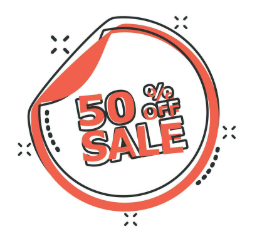
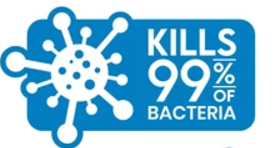
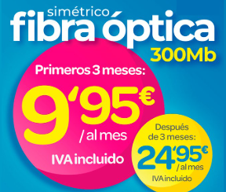
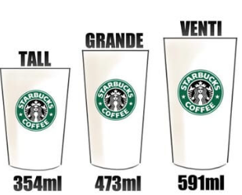

Expertos en psicología y economía del comportamiento han identificado diversas tendencias cognitivas que influyen en cómo las personas toman decisiones.
| Un sesgo cognitivo es un fenómeno psicológico que distorsiona la manera en que se percibe la información del entorno. Esta distorsión, al afectar la lógica de los razonamientos, puede llevar a cometer errores al tomar decisiones. |
Ejemplos de sesgos cognitivos:
A. Contabilidad mental
Los individuos tienden a dividir su dinero en diferentes “cuentas mentales”, según el propósito o contexto. Por ejemplo, alguien puede gastar de más durante unas vacaciones justificando que “ya ha gastado tanto que un poco más no hace diferencia”. Sin embargo, esa misma persona podría esforzarse mucho para ahorrar unos pocos euros en el supermercado.

Otra manifestación de este sesgo es valorar más el dinero que se obtiene con esfuerzo, como un salario, que aquel obtenido sin dificultad, como un premio. Aunque ambos tienen el mismo valor, las personas suelen gestionarlos de manera distinta, lo que sugiere que debería tratarse todo el dinero con el mismo criterio.
B. Efecto ancla
Las personas suelen basar sus decisiones en la primera información que reciben, conocida como “ancla”. Por ejemplo, si te preguntan la edad a la que murió Cervantes y previamente te mencionan el número 40, podrías suponer que falleció alrededor de esa edad, aunque en realidad murió a los 68 años.
Un ejemplo comercial es el uso de precios elevados al inicio, lo que hace que cualquier oferta posterior parezca más atractiva en comparación.

C. Efecto manada
En muchas ocasiones, las personas prefieren seguir lo que hace la mayoría. Por ejemplo, si al elegir entre dos terrazas una está más llena que la otra, tendemos a optar por la que parece más popular, pensando que la mayoría tiene razón.
Esta tendencia refleja cómo a menudo nos dejamos influenciar por las decisiones del grupo, incluso sin evaluar si realmente son correctas.
D. Efecto marco
Las decisiones de las personas pueden cambiar según cómo se presente la información. Supongamos que debes elegir entre dos opciones: una indica que puede tener un 1% de bacterias, mientras la otra señala que es 99% libre de bacterias. Aunque ambas son equivalentes, la mayoría preferirá la opción que enfatiza el aspecto positivo.

Este fenómeno es ampliamente utilizado en publicidad, como en productos de cosmética que usan mensajes positivos como “te sentirás más joven” en lugar de “evitarás envejecer”.
E. Efecto dotación
Las personas tienden a asignar más valor a algo que ya poseen, aunque sea irracional. Por ejemplo, el dueño de un bien suele pedir un precio más alto por venderlo del que aceptaría si tuviera que comprarlo él mismo.
Empresas aprovechan este sesgo ofreciendo servicios o productos a precios iniciales bajos, con la intención de que los clientes los perciban como algo propio. Una vez que lo consideran “suyo”, están más dispuestos a pagar tarifas más altas por conservarlo.

F. Aversión a las pérdidas
La mayoría prefiere evitar perder algo a obtener una ganancia equivalente. Por ejemplo, si alguien encuentra un billete de 5 euros en la calle, sentirá una pequeña alegría, pero si lo pierde, la frustración será mucho mayor.
Este sesgo también explica por qué las personas suelen evitar inversiones riesgosas, incluso si la probabilidad de ganar es igual a la de perder, ya que el temor a una posible pérdida supera la expectativa de una posible ganancia.
G. Efecto señuelo
Este sesgo ocurre cuando se introduce una tercera opción que cambia las preferencias iniciales. Por ejemplo, si se presentan dos móviles, uno de 300 € y otro de 350 €, la mayoría elige el primero por ser más económico. Sin embargo, si se añade un tercer modelo de 800 €, el de 350 € parece más razonable en comparación, haciendo que más personas lo elijan.
Esta estrategia es usada con frecuencia en estrategias de marketing para dirigir la decisión del consumidor hacia un producto específico. Lo encontramos, por ejemplo, en la conocida cadena Starbucks. Si el precio del vaso grande es solo ligeramente inferior al tamaño venti, te "convendrá" elergir el mayor, aunque sea más caro.

La identificación de estos sesgos permite comprender cómo factores aparentemente irrelevantes pueden tener un impacto significativo en nuestras decisiones cotidianas.